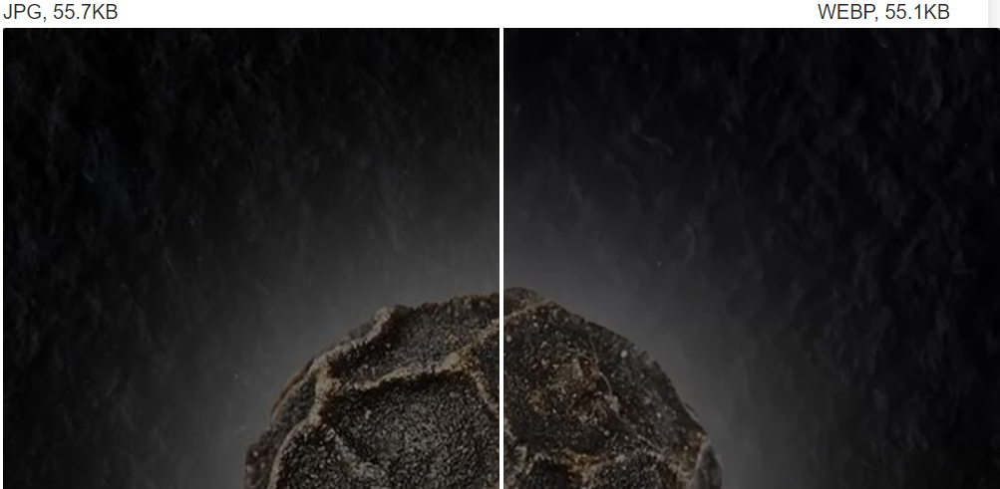
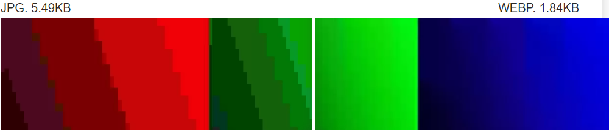

Если рассмотреть две одинаковые картинки одинакового размера, но разных форматов - видна существенная разница.

Одназначная победа JPG над WEBP. Качество фона сильно пострадало,
мелкие детали лучше на формате JPG.

Файлы WEBP и JPG сохранены в минимально возможном качестве. Можно сделать вывод, что формат WEBP явно превосходит формат JPG.